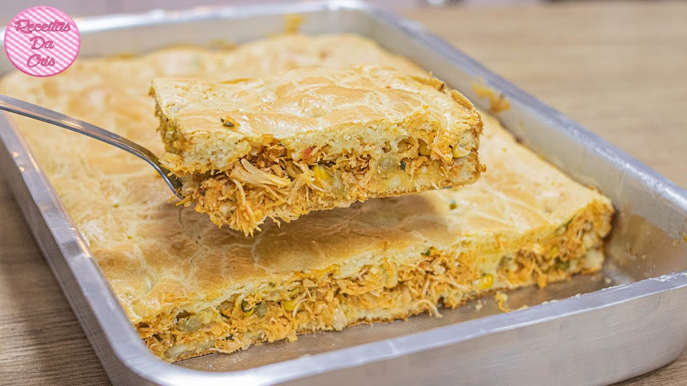

Receita de Torta de Frango

- Pule para "Montagem"
- Pule para "Ultima parte do recheio"
- Pule para "salgados"
- Pule para "finalizar"
- Pule para "recheio inicial"
- Pule para "massa"
Receita:
Massa:
- 1 e 1/2 colher (Sopa) de manteiga
- 1 colher (sopa) de fermento em pó
- 5 xícaras de farinha de trigo
- 5 xícaras de queijo minas ralado
- 3 4 de xícara de leite morno (reserve)
Recheio:
- 1 Kg de peito de frango desossado
- 2 dentes de alho picados e amassados
- 1 colher (sopa) de azeite
- 1 lata de molho de tomate
- 1 colher (sopa) cheia de farinha de trigo
- 3 tabletes de caldo de galinha
Para finalizar:
- papel-toalha para escorrer
Modo de Preparo:
Salgados:
- Em uma vasilha, misture todos os ingredientes na ordem, menos o leite. Misture bem com as mãos para incorporar os ingredientes em seguida coloque o leite aos poucos até forma uma massa homogênea (ponto de massa de pão).
-
Recheio:
-
Cozinhe o peito de frango, desfie e reserve.
-
Em uma panela coloque o azeite e frite a cebola, não deixe dourar.
- Coloque o alho e frite mais um pouquinho.
-
Acrescente o frango desfiado.
-
Dissolva os cubinhos de caldo de galinha em 1/2 xícara de água quente, junte ao refogado.
-
Coloque o trigo e mexa sem parar vigorosamente até ficar com uma aparência cremosa.
-
Junte os outros ingredientes, mexa bem e está pronto.
Montagem:
- Com o auxilio de um rolo de pau abra a massa e corte com um cortado de 8 cm de diâmetro coloque o recheio já frio e feche-os, dobre a massa no meio para ficar em forma de meia lua.
- Aperte com os dedos unindo as 2 bordas.
- Depois que estiverem todos prontos, frite-os em óleo quente até que fiquem dourados, mais ou menos uns 40 segundos.
- Após a fritura, coloque-os em um prato forrado com papel-toalha para que fiquem sequinhos.
voltar